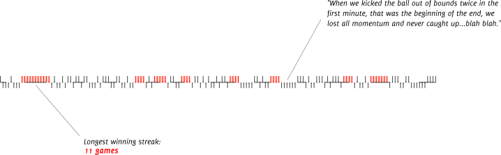

LOESS (image from Simply Statistics)
LOESS (image from Simply Statistics)One common mistake inexperienced analyst do in analysing data is that of assigning a special role to time. In my line of work, I see this a lot. Signs of chronophrenia, a term I just made up, are the unusual focus on calendar time: from line plots of multiple variables on the y-axis against time on the x-axis, to frequencies or averages by some meaningful time cut-off: monthly, quarterly, yearly and so on.
Don’t get me wrong, I think there are plenty of scenarios when looking at time makes perfect sense and both the statistical, engineering and econometric literature continue to make substantial contributions to this area (I can think of change point detection, Kalman filters and Bayesian/Dynamic time series).
Often the analyst attempts to visually assess whether a shift in time exists. The hope is that the shift can be tied to a special cause known to the analyst (for instance a change that was introduced at known point in time) and that this would represent evidence in favour or against a hypothesis.
There are a number of drawbacks with this approach. Here I will list a few common ones:
How do we know whether a change in time is due to some special cause that happens at a know time, or whether is due to normal variation? In these settings SPC is limited.
Time does not possess magical properties: in most fields, seldom is time on the causal pathway. In other words, time does not cause much. Ok, there are some exceptions, however, at best, time is a proxy measure for something we are unable to measure. Think about it: how many times can we think of time having caused something? Death? Not really: trauma, or the inability of cells to reproduce reliably are some of the underlying causes. An old engine breaking down? Think fatigue, structural failure, wear and tear. Changing jobs? Think of complex social issues.
Once you do fully understand a process, time plays no role (Cleves et al.)
Suppose we introduce some change at a known point in time. The analyst proceeds to compare, often visually, whether a slope or a shift change occurs. The approach is limited unless we can somehow freeze everything else.
To an untrained analyst, time is an open invitation to slice and dice the data until some interesting results are found: we will always find a reason for looking at things daily, weekly, monthly, quarterly, yearly. These are in fact, meaningful measures to a lot of businesses. Eventually, you are guaranteed to find something interesting or even significant. But it does not mean it’s true. But wait! Don’t take my word for it! Tyler Vigen assembled a very humorous collection of spurious correlations. Vigen had enough material to fill a whole book. You don’t have to buy his book, though I would encourage you to do so. Some are available on Vigen’s website.
Visualization pioneer Edward Tufte has a very effective visual demonstration on streak-guessing and over-narrative around time (here, adapted from the original). On the top figure we see the actual win-loss record. At the bottom, notice what happens when we randomize the order on time.
 2009 Boston Red Sox win-loss record: when 4 or more wins occurs one after the other, the series is drawn in red. The causal attribution of win or loss streaks result in over-narratives.
Not so fast: 3 randomized samples from the same data. There is little evidence for a causal mechanism of win or loss streaks that in the original series resulted in over-narratives. The invisible hand of chance.
So, enough about ranting against time. Let me play devil’s advocate and list some arguments in favour of time:
When we do not understand a process, time is often a good proxy for something we are unable to measure. We should try to smooth time to detect trends. I’m a fan of LOESS for its flexibility.
LOESS (image from Simply Statistics)
Survival analysis (time to event analysis) is mostly concerned with the rate at which things are moving. Is a certain group reaching an event faster than another group? Survival analysis can effectively deal with survivorship bias.
When we introduce a change at a given time point, there are methods that try to deal with it, such as interrupted time series or change point detection (these can go by different names). For an overview, see Kontopantelis. Change point detection is an active area of research.
If you are embarking on an analysis, don’t jump on time as your first go-to measure. Think carefully about the problem and try first to identify all factors that may affect a response of interest. Explore those first, plot them against the response, plot them against each other. Try to learn as much about your problem without recurring to time immediately. When you do look at time, remember there are challenges unique to times that complicates things (autocorrelation and censoring to name a couple).
Remember: “Once you do fully understand a process, time plays no role” … or almost.